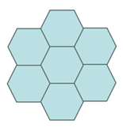
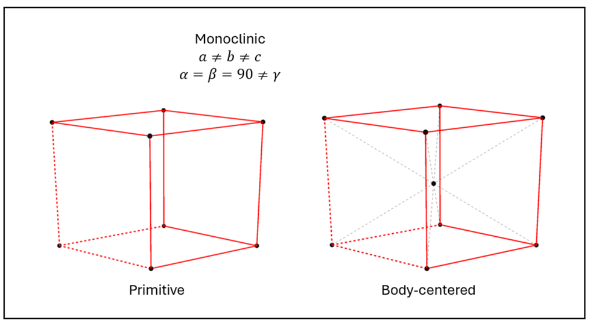
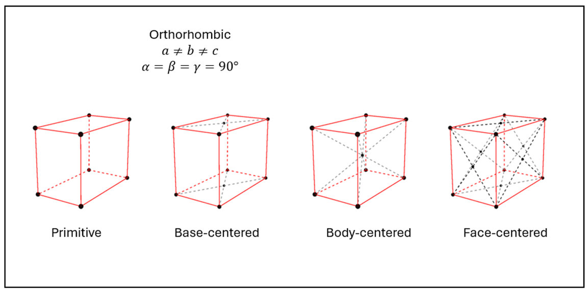
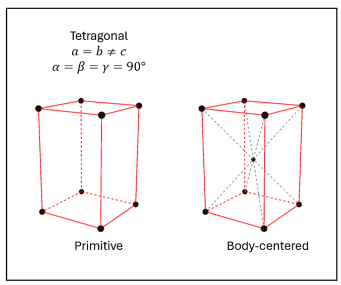
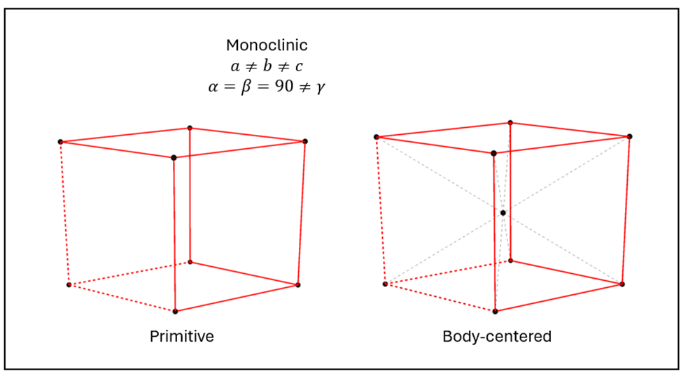
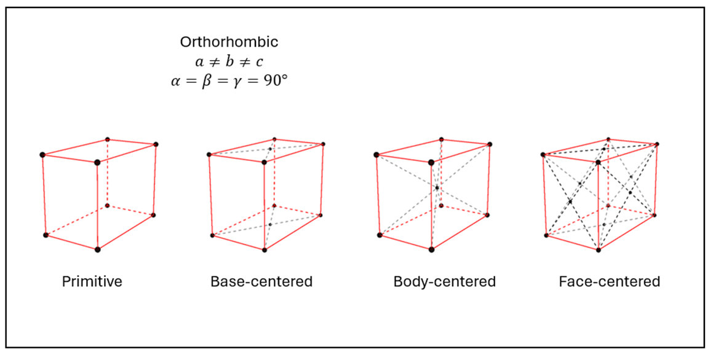
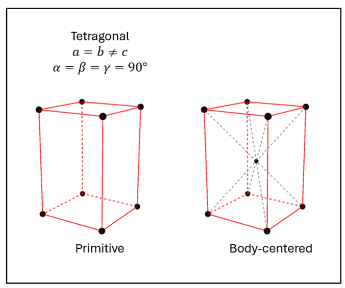

Objectives:
- Explain the difference between atomic structure, atomic arrangement, microstructure, and macrostructure.
- Identify the 14 Bravais lattices and 7 crystal systems.
- Perform crystal structure calculations.
- Unit cell properties of FCC and BCC.
Properties of materials are determined by their structure. Structure can be tailored in predictable ways through processing.
Atoms in crystalline solids are arranged in an ordered periodic structure. Take a look at the Alum crystals shown in the figure. Notice the nice large crystal near the bottom with the large flat region (facet). The edges of this facet may change in length but they always meet at specific angles dependent on the type of crystal. This implies that there must be some underlying order in materials (crystal structure).
Not all materials are crystalline. Non-crystalline materials are referred to as amorphous. Materials can also have both crystalline and amorphous regions and are referred to as semi-crystalline.
There are a limited number of ways atoms can be arranged periodically to fill space. This can be demonstrated in 2D if you try to completely fill space with regular pentagons versus regular hexagons. The hexagons (as well as parallelograms, squares, rectangles, and triangles) can be arranged to fill a plane without gaps, but the pentagons cannot as shown below.
If we extend this concept to 3D, we find that only 7 crystal systems can be uniquely identified which fill space in 3 dimensions. Some systems can have further subclassifications, giving us the 14 Bravais lattices.
In this course, we will focus on the cubic crystal system and briefly introduce the hexagonal crystal system but for completeness we present the systems and lattices in the figures below.
 






A set of lattice parameters are used to quantify the crystal structure of a given material. These lattice parameters, three edge lengths: \( a, b, c \) and 3 angles: \( \alpha, \beta, \gamma \), are shown in the figure for the most general case of the triclinic system where \( a \ne b \ne c \) and \( \alpha \ne \beta \ne \gamma \ne 90^\circ \).
For a cubic system, the edge lengths are all equal a=b=c and the angles are all 90 degrees. We would write this as (a, a, a, 90, 90, 90).
| Material | Crystal System / Bravais Lattice | a, b, c | \(\alpha\), \(\beta\), \(\gamma\) |
|---|---|---|---|
| NaCl | Cubic / FCC | 0.564, 0.564, 0.564 | 90,90,90 |
| CsCl | Cubic / SC | 0.412, 0.412, 0.412 | 90,90,90 |
| \(MgSO_4\) (epsom salt) | Monoclinic / | ||
| Gold (Au) | Cubic / FCC | Cell 3 | 90,90,90 |
| Copper (Cu) | Cubic / FCC | Cell 3 | 90,90,90 |
| Iron ( \(\boldsymbol{\alpha}\) -Fe) | Cubic / BCC | Cell 3 | 90,90,90 |
| Iron ( \(\boldsymbol{\gamma}\) -Fe) | Cubic / FCC | Cell 3 | 90,90,90 |
| Aluminum (Al) | Cubic / FCC | Cell 3 | 90,90,90 |
| Zinc (Zn) | Hexagonal / (HCP) * | Cell 3 | 90,90,120 |
| Titanium (Ti) | Hexagonal / (HCP) * | Cell 3 | 90,90,120 |
| Tungsten (W) | Cubic / BCC | Cell 3 | 90,90,90 |
| SiC | Hexagonal | Cell 3 | 90,90,120 |
| TiC | Cubic / FCC | Cell 3 | 90,90,90 |
| TiO 2 | Tetragonal / Simple | Cell 3 | 90,90,90 |
| Fe 3 C | Orthorhombic / Simple | Cell 3 | 90,90,90 |
| WC | Hexagonal | Cell 3 | 90,90,120 |
| Si | Cubic / (diamond cubic) ** | Cell 3 | 90,90,90 |
| Ge | Cubic / (diamond cubic) ** | Cell 3 | 90,90,90 |
| Diamond (C) | Cubic / (diamond cubic) ** | Cell 3 | 90,90,90 |
| Graphite (C) | Hexagonal | Cell 3 | 90,90,120 |
* Hexagonal Close-Packed (HCP) is not a Bravais Lattice. The Bravais lattice is simple hexagonal but there is an extra atom located in the cell which results in a closely packed structure to be discussed further in this lesson. ** Diamond cubic is also not a Bravais lattice but provides a more useful description for these structures. The Bravais lattice for diamond cubic is FCC but again extra atoms are introduced in the FCC lattice.
Notice that the cubic system has 3 Bravais lattices. By associating 1 atom (hard sphere) with each lattice point, we can generate 3 distinct cubic structures as shown. Notice the directions in which the atoms touch in each lattice (along edges, body diagonal, or faces). The total volume of atoms in each unit cell increases as we move from the simple cubic (1 atom), to the body-centered (2 atoms) and finally to the face-centered cell (4 atoms). The size of the unit cells also increase as might be expected but not as much as we might expect. The SC cell contains 1 atom while the FCC contains 4 atoms but the cell volume increases by less than 4x. This implies that the packing efficiency must be greater for the FCC lattice compared to the SC lattice. We can quantify this by calculating the volume of each unit cell taken up by atoms. The atoms in the simple cubic lattice take up only 50% of the volume, while the BCC lattice 68% atom and the FCC is 74% atom (this is the best we can do packing hard spheres). This is usually expressed in fractional form as the atomic packing factor or APF. As an example, we would say that the face-centered cubic structure has an APF of 0.74.
| Simple cubic | Body-centered cubic | Face-centered cubic | |
|---|---|---|---|
| APF | 0.5 | 0.68 | 0.74 |
| atoms per cell | 1 | 2 | 4 |
| edge length, \(a\) | \( 2\ R \) | \( \frac{4\ R}{\sqrt{3}} \) | \( \frac{4\ R}{\sqrt{2}} \) |
| atoms touch along | edges | body diagonals | face diagonals |
| cell volume | \( (2\ R)^3 \) | \((\frac{4\ R}{\sqrt{3}})^3\) | \((\frac{4\ R}{\sqrt{2}})^3\) |
| \( \frac{\text{cell volume}} {\text{atoms per cell}} \) | \( 8\ R^3 \) | \(6.16\ R^3 \) | \( 5.66\ R^3 \) |
Concept check: We have 3 samples labeled A, B, and C. All contain the same 1 million atoms but sample A has the simple cubic crystal structure; sample B is body-centered cubic; and sample C is face-centered cubic. If all three samples had the same shape, which sample would be the largest? Smallest? Which sample would weigh the most?
The unit cell is the smallest unit that when repeated side-by-side in 3 dimensions forms the overall crystalline structure. The most basic unit cell is composed of a Bravais lattice with one atom located at each lattice point. The cut-sphere model is the best representation of a unit cell although the space filling model is more commonly used.
The face centered cubic structure is shown in the live demo above. Try clicking and holding on the structure to rotate image. Use the slider, to change the radius of the atoms. At maximum radius size, we have what is called the "space-filled model" i.e., how the atoms pack in the real material. At smaller atom sizes, we have the "exploded-view model" which is used to more easily see the geometry and location of the atoms. Use the slider to determine the directions in which the atoms touch.
Body-centered cubic (BCC) unit cell using the cut-sphere model. Click on the check boxes to add additional unit cells and the slider to bring the unit cells together. Notice how it would take 8 unit cells to form a complete atom i.e., the corners contain only 1/8 of an atom.

The atomic packing factor (APF) is a measure of the packing efficiency of a given crystal structure. It is defined as the total volume of atoms in the unit cell divided by the unit cell volume. We treat the atoms as hard spheres.
8 corner atoms x 1/8 + 1 body center atom = 2 atoms per unit cell
Total volume of atoms in the unit cell : Notice that the atoms at the corners of the BCC unit cell are not completely contained within this cell but as shown are only 1/8 of a full atom. We have 8 corners each with 1/8 of an atom so the corners contribute 1 full atom worth of volume to the unit cell. The body center atom is completely contained within the unit cell and so the cell has a total of 2 atom volumes. The total volume of two atoms (spheres) is \( 2\times (\frac{4}{3} \pi R^3) = \frac{8}{3}\pi R^3\) where \(R\) is the radius of the atoms.


Body diagonal for BCC structure: For the BCC structure, atoms touch along the body diagonal as shown in the figure (where all other atoms have been removed from the unit cell). The triangle shown in bold and redrawn in the second figure is a right triangle with a height equal to the unit cell edge length, \( a\). The bottom leg is the diagonal across the bottom face of the cube which is \( a \sqrt{2} \). The diagonal of the cube is then given by the Pythagorean theorem as \[ \text{Body diagonal} =\sqrt{ (a\sqrt{2})^2 + (a)^2} = a\ \sqrt{3} \].
Finding the BCC edge length, \(a\): As just demonstrated, the body diagonal is equal to \(a\ \sqrt{3}\) but it is also equal to \(4\ R\). This can be observed by counting the number of line segments of length \(R\) shown along the hypotenuse of the figure. The important condition here is that the atoms are touching along this direction. Therefore, \(a \sqrt{3}=4\ R \) or \[a=\frac{4\ R}{\sqrt{3}} \]
Atomic Packing Factor: Recall that the atomic packing factor, represents the packing efficiency or the fraction of the unit cell that contains atoms. \[ APF = \frac{\text{total atom volume}}{\text{unit cell volume}} = \frac{\text{number of atoms}\times\text{volume of an atom}}{(\text{edge length})^3}\] \[=\frac{2\times \frac{4}{3} \pi\ R^3}{(\frac{4\ R}{\sqrt{3}})^3} = \frac{\pi\ \sqrt{3}}{8} \approx 0.68\] Therefore, 68% of the BCC unit cell is composed of atoms and the remaining 32% is empty space.
How would this derivation change if we now considered the FCC structure? (Perhaps a good exam question.)


From triangle (1) and the Pythagorean theorem, we get the face diagonal \(d_f=\sqrt{a^2+a^2}=a\ \sqrt{2} \) and then from triangle 2 we can get the body diagonal: \(d_b=\sqrt{a^2+(a\ \sqrt{2})^2}=a\ \sqrt{3}\)
 We can find the magnitude of a vector starting with the
definition of the dot product between two vectors,
\(\vec{v_1}\) and
\(\vec{v_2}\),
We can find the magnitude of a vector starting with the
definition of the dot product between two vectors,
\(\vec{v_1}\) and
\(\vec{v_2}\),
\[\vec{v_1}\cdot\vec{v_2}=|\vec{v_1}|\ |\vec{v_2}|\
\cos{\theta} \] where \(\theta\) is the angle between
the vectors. The dot product of a vector with itself
\((\theta=0^\circ)\) is therefore \(
\vec{v_1}\cdot\vec{v_1}=|\vec{v_1}|\ |\vec{v_1}| \) or
\(|\vec{v_1}| = \sqrt{\vec{v_1}\cdot\vec{v_1}}\). If
\(\vec{v_1}\) is the body diagonal with general indices
\((a,b,c)\), we have our final equation for the length of
the body diagonal: \( |\vec{v_1}|=\sqrt{a^2+b^2+c^2} \) or
for a cube we get: \[\text{body
diagonal}=\sqrt{a^2+a^2+a^2}=a\ \sqrt{3} \].


 The small space located at the center between 4 neighboring
atoms. The centers of the 4 atoms forms a
tetrahedron. For the FCC structure, this site is located
just behind a corner atom so there are 8 tetrahedral sites in
the FCC unit cell.
The small space located at the center between 4 neighboring
atoms. The centers of the 4 atoms forms a
tetrahedron. For the FCC structure, this site is located
just behind a corner atom so there are 8 tetrahedral sites in
the FCC unit cell.
Location of tetrahedral site : The tetrahedral site is located in general \((0.25, 0.25, 0.25)\) away from any given corner atom. If we are considering the corner atom at \((0,0,0)\), the tetrahedral site is located at \( (0,0,0)+(0.25,0.25,0.25)=(0.25,0.25,0.25)\). If we are considering the corner atom at \((1,1,1)\) however, the tetrahedral site is located at \( (1,1,1)-(0.25,0.25,0.25) = (0.75,0.75,0.75)\). Note that there is another site at \((1.25, 1.25, 1.25)\) but this is located in a neighboring unit cell.
 If we consider the origin to be located at the bottom-back-left
corner, then the corner atom shown in grey would have a position
of (1,1,1) and the tetrahedral site (small red atom) would be
located at (0.75, 0.75, 0.75). These two atoms touch
when we perfectly fill the tetrahedral space. The line
connecting the corner and tetrahedral centers is equal to \(r+R\)
as shown in the figure. The length of this line is also
given by the \(|\vec{v}|\) where
\(\vec{v}=(1,1,1)-(0.75,0.75,0.75) =
(0.25,0.25,0.25)\). \(|\vec{v}| =
\sqrt{0.25^2+0.25^2+0.25^2}=0.25\ \sqrt{3}\) or \(0.25\ a \
\sqrt{3}\) for a cubic structure with edge length, \(a\).
Therefore, we have \[r+R=0.25\ a \ \sqrt{3}\]. Recall that for the
FCC structure, \(a=\frac{4R}{\sqrt{2}}\). Now we
have, \[r+R=0.25\ \frac{4R}{\sqrt{2}} \ \sqrt{3}\].
Solving for \(r\), \[r=(0.25\ \frac{4R}{\sqrt{2}} \
\sqrt{3})-R \approx 0.225 R\]
If we consider the origin to be located at the bottom-back-left
corner, then the corner atom shown in grey would have a position
of (1,1,1) and the tetrahedral site (small red atom) would be
located at (0.75, 0.75, 0.75). These two atoms touch
when we perfectly fill the tetrahedral space. The line
connecting the corner and tetrahedral centers is equal to \(r+R\)
as shown in the figure. The length of this line is also
given by the \(|\vec{v}|\) where
\(\vec{v}=(1,1,1)-(0.75,0.75,0.75) =
(0.25,0.25,0.25)\). \(|\vec{v}| =
\sqrt{0.25^2+0.25^2+0.25^2}=0.25\ \sqrt{3}\) or \(0.25\ a \
\sqrt{3}\) for a cubic structure with edge length, \(a\).
Therefore, we have \[r+R=0.25\ a \ \sqrt{3}\]. Recall that for the
FCC structure, \(a=\frac{4R}{\sqrt{2}}\). Now we
have, \[r+R=0.25\ \frac{4R}{\sqrt{2}} \ \sqrt{3}\].
Solving for \(r\), \[r=(0.25\ \frac{4R}{\sqrt{2}} \
\sqrt{3})-R \approx 0.225 R\]